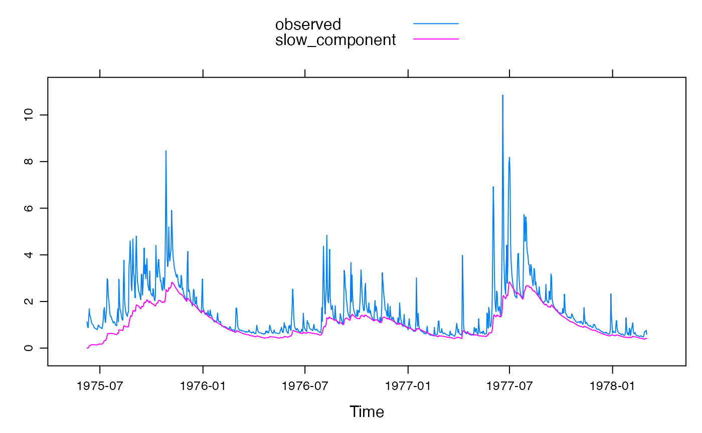
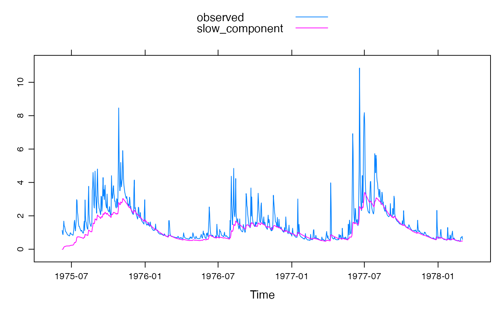
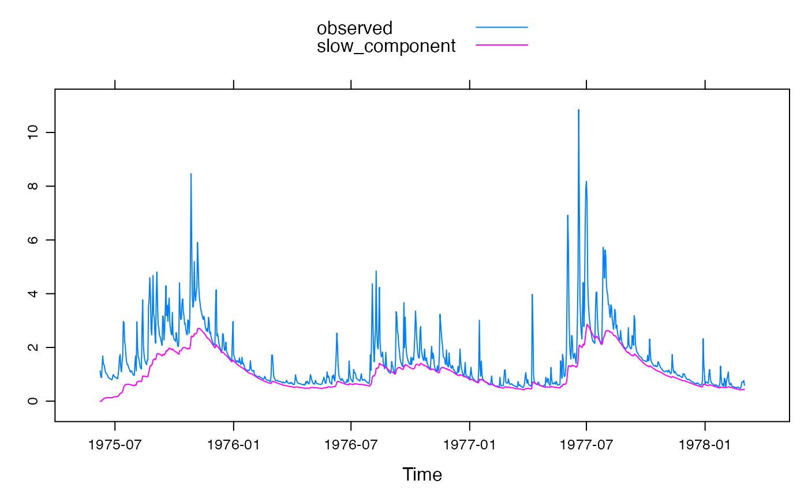

R/armax.inverse.sim.R
armax.inverse.sim.RdInvert transfer function models to estimate input series.
armax.inverse.sim(
DATA,
a_1 = 0,
a_2 = 0,
a_3 = 0,
b_0 = 1,
b_1 = 0,
b_2 = 0,
b_3 = 0,
pars = NULL,
delay = 0,
init = 0,
rain.factor = 1.1,
rises.only = FALSE,
use.Qm = TRUE,
use.fft.method = FALSE,
constrain.fft = TRUE,
mass.balance = use.fft.method,
scale.window = NA
)time-series-like object with columns Q (streamflow) and
optionally P (precipitation).
Placeholder
Placeholder
Placeholder
Placeholder
Placeholder
Placeholder
Placeholder
Placeholder
delay (lag time / dead time) in number of time steps.
Placeholder
Placeholder
Placeholder
Placeholder
Placeholder
Placeholder
Placeholder
Placeholder
...
## baseflow filtering using two-store unit hydrograph
data(Murrindindi)
x <- Murrindindi[1:1000, ]
## case 1 (preferred): streamflow + rainfall data constrained
## such that effective rainfall is less than observed rainfall
foo <- hydromad(x,
sma = "armax.inverse", routing = "armax",
rfit = list("inverse", order = c(2, 1))
)
#> Warning: did not converge after 12 iterations
foo
#>
#> Hydromad model with "armax.inverse" SMA and "armax" routing:
#> Start = 1975-06-08, End = 1978-03-03
#>
#> SMA Parameters:
#> a_1 a_2 b_0 b_1 delay
#> 1.4740 -0.4822 0.1413 -0.1331 0.0000
#> Routing Parameters:
#> a_1 a_2 b_0 b_1 delay
#> 1.4740 -0.4822 0.1413 -0.1331 0.0000
#> TF Structure: S + Q (two stores in parallel)
#> Poles:0.49, 0.984
#>
#> Routing fit info: list(TRUE, 2)
xsq <- predict(foo, return_components = TRUE)
xyplot(cbind(observed = x$Q, slow_component = xsq$Xs), superpose = TRUE)

## case 2: using streamflow data only, constrained
## to have effective rainfall only when flow is rising
foo <- hydromad(x$Q,
sma = "armax.inverse", routing = "armax",
rfit = list("inverse", order = c(2, 1), rises.only = TRUE)
)
#> Warning: did not converge after 12 iterations
xsq <- predict(foo, return_components = TRUE)
xyplot(cbind(observed = x$Q, slow_component = xsq$Xs), superpose = TRUE)

## case 3: using streamflow data only, unconstrained
foo <- hydromad(x$Q,
sma = "armax.inverse", routing = "armax",
rfit = list("inverse", order = c(2, 1))
)
#> Warning: did not converge after 12 iterations
#> Warning: reached maximum number of iterations
xsq <- predict(foo, return_components = TRUE)
xyplot(cbind(observed = x$Q, slow_component = xsq$Xs), superpose = TRUE)
